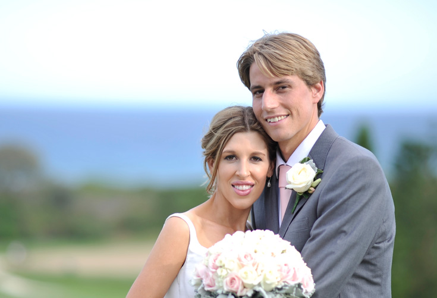
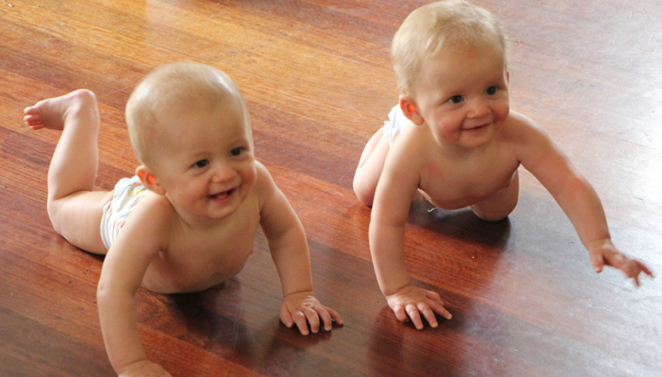
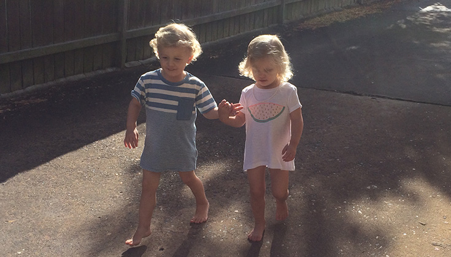
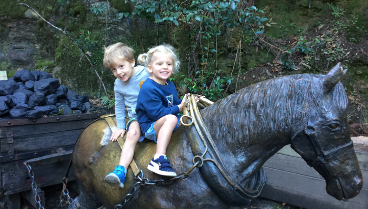
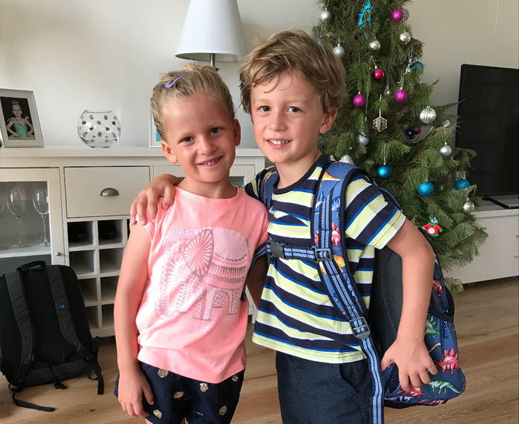
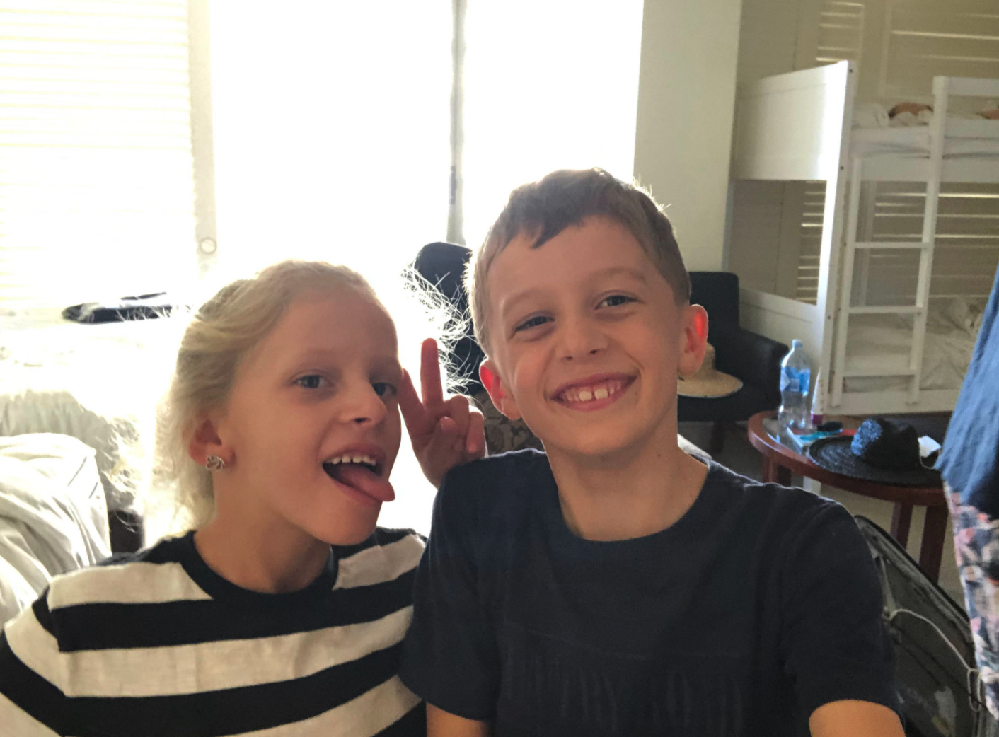
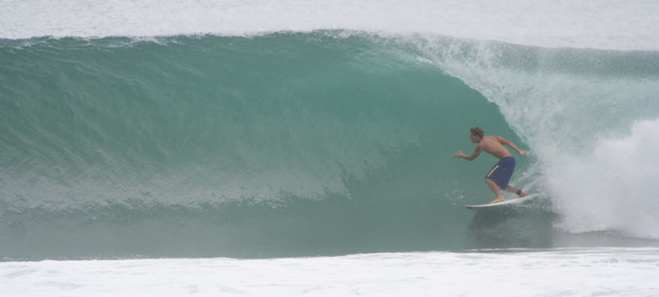
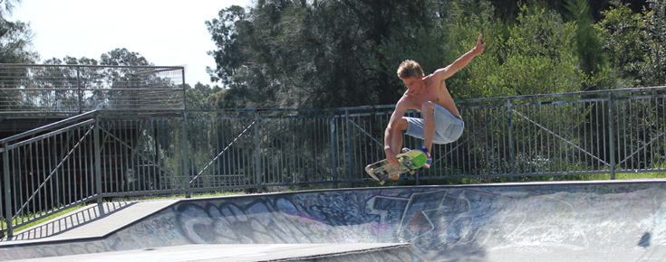
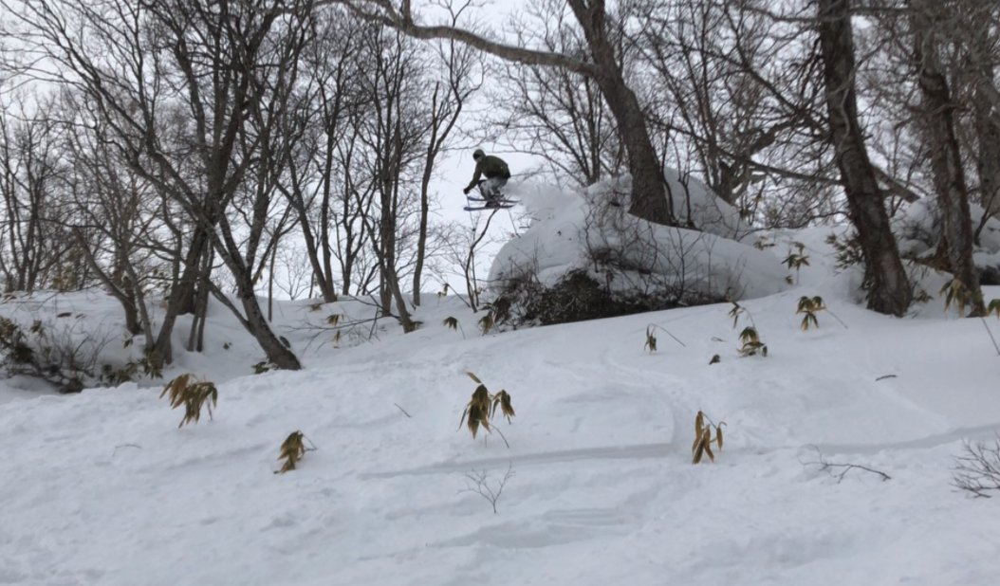

I go by Joss, not Josh. I'm a 39 year old software developer from Sydney, Australia. I've been writing software professionally since I was 18, and my recent experience is with Node.js and React and, prior to that, Ruby on Rails.
Community
I'm involved in the Sydney and Australian Ruby community:
Work
Checkout my resume.
Online
Twitter GitHub StackOverflow Medium Speaker Deck Linked In
I'm married to Jess.

We have twins.

They're getting really big, quick...

...Really quick...

...Really, really quick!

Now they're 8 and steal my phone to take selfies

When I'm not coding or hanging with my kids, I like surfing...

... skateboarding...

... and skiing.
